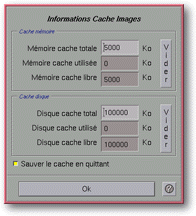

<!-- Documentation Xclamation (c)1994-2000 AXENE contact axene@axene.org>
<html>

<head>
<title>Configuration du Cache Images</title>
</head>

<body BGCOLOR="#FFFFFF" BACKGROUND="Images/back.gif" TEXT="#000000">

<p ALIGN="right">  </p>

<p><br>
<br>
La boîte de configuration du Cache Images permet de voir l'état instantané du Cache
Images et de changer ses paramètres. Le Cache Images est une mémoire tampon qui va
garder en mémoire vive ou sur disque les images utilisées dans les documents ouverts par
Xclamation. Les images sont d'abord stockées dans le cache en mémoire vive puis, quand
celui-ci est plein, le système place les images les moins souvent utilisées dans le
cache sur disque. Les paramètres initiaux de ce Cache Images sont définis dans les <a HREF="ConfigImageCache.html">fichiers de configuration</a>. <br>
<br>
</p>

<hr>

<p><br>
</p>

<p align="center"><br>
<i><small>Photo d'écran&nbsp;: Boîte de configuration du Cache Images</small></i> </p>

<p><br>
</p>

<hr>

<p><br>
</p>

<h3>Partie supérieure de la boîte de dialogue&nbsp;:</h3>

<ul>
  <li><a NAME="memory_cache_frame">la section <i>&quot;Cache mémoire&quot;</i> concerne
    l'ensemble des images contenues dans le Cache Images stockées en <b>mémoire</b>. </a><br>
    &nbsp;<ol>
      <li><a NAME="max_memory_textfield">le champ texte <i>&quot;Mémoire cache totale&quot;</i>
        permet de <b>définir la taille maximale du Cache Images en mémoire vive</b>. La valeur
        est exprimée en kilo-octets (1024 octets) et doit être comprise entre 0(Ko) et
        100.000(Ko). Un changement de valeur prend effet immédiatement. Si l'on spécifie la
        valeur 0(Ko), le Cache Images stocke en mémoire que la dernière image chargée. </a><br>
        &nbsp;</li>
      <li><a NAME="used_memory_textfield">le champ texte d'information <i>&quot;Mémoire cache
        utilisée&quot;</i> <b>indique la taille instantanée occupée par les images dans le
        cache en mémoire</b>. Cette valeur non modifiable peut être supérieure -de la taille de
        la dernière image chargée- à la taille maximale du Cache Images en mémoire. </a><br>
        &nbsp;</li>
      <li><a NAME="free_memory_textfield">le champ texte d'information <i>&quot;Mémoire cache
        libre&quot;</i> <b>indique la place mémoire encore disponible dans le Cache Images</b>.
        Cette valeur est la soustraction de la taille totale avec la taille utilisée. Comme la
        taille utilisée peut être supérieure à la taille totale, cette valeur peut être
        négative. </a><br>
        &nbsp;</li>
      <li><a NAME="memory_clear_button">le bouton <i>&quot;Vider&quot;</i> permet de <b>vider le
        cache mémoire</b>. Il permet de détruire les images actuellement stockées en mémoire
        et entraîne un rechargement de celles-ci, lors de leur prochaine utilisation (rotation et
        changement de taille). Il peut être utile de vider le Cache Images en mémoire afin de
        libérer de la mémoire ou lorsque l'on modifie un fichier image pour le recharger dans
        Xclamation. </a><br>
        &nbsp;</li>
    </ol>
  </li>
  <li><a NAME="disk_cache_frame">la section <i>&quot;Cache disque&quot;</i> concerne
    l'ensemble des images contenues dans le Cache Images stockée sur le <b>disque dur</b>. </a><br>
    &nbsp;<ol>
      <li><a NAME="max_disk_textfield">le champ texte <i>&quot;Disque cache totale&quot;</i>
        permet de <b>définir la taille maximale du Cache Images sur le disque dur</b>. La valeur
        est exprimée en kilo-octets (1024 octets) et doit être comprise entre 0(Ko) et
        1.000.000(Ko). Un changement de valeur prend effet immédiatement. Si l'on spécifie la
        valeur 0(Ko), le Cache Images ne peut rien stocker sur le disque dur, les images seront
        rechargée depuis leur fichier original lors de leur prochaine utilisation (rotation et
        changement de taille). </a><br>
        &nbsp;</li>
      <li><a NAME="used_disk_textfield">le champ texte d'information <i>&quot;Disque cache
        utilisée&quot;</i> <b>indique la taille instantanée occupée par les images dans le
        cache sur disque</b>. Cette valeur est non modifiable. </a><br>
        &nbsp;</li>
      <li><a NAME="free_disk_textfield">le champ texte d'information <i>&quot;Disque cache
        libre&quot;</i> <b>indique la place disque encore disponible dans le Cache Images</b>.
        Cette valeur est la soustraction de la taille totale avec la taille utilisée. </a><br>
        &nbsp;</li>
      <li><a NAME="disk_clear_button">le bouton <i>&quot;Vider&quot;</i> permet de <b>vider le
        cache disque</b>. Il permet de détruire les images actuellement stockées sur le disque
        et entraîne un rechargement de celles-ci, lors de leur prochaine utilisation (rotation et
        changement de taille). Il peut être utile de vider le Cache Images sur disque afin de
        libérer de la place sur le disque dur ou lorsque l'on modifie un fichier image pour le
        recharger l'image dans Xclamation. </a><br>
        &nbsp;</li>
    </ol>
  </li>
  <li><a NAME="save_cache_button">le bouton poussoir <i>&quot;Sauver le cache en
    quittant&quot;</i> permet de <b>sauver le contenu des caches</b> mémoires et disques pour
    la prochaine fois que l'on utilisera Xclamation. Si l'on désactive ce bouton, le cache
    disque sera détruit en quittant Xclamation ce qui permet de libérer de la place sur le
    disque dur. Il est utile d'activer ce bouton lorsque l'on édite souvent le même document
    Xclamation. </a><br>
    &nbsp;</li>
</ul>

<p><b>Nota&nbsp;:</b> lorsque l'on change le type d'affichage du serveur X (changement de
profondeur d'affichage) entre deux lancements d'Xclamation, il vaut mieux vider le cache
avant de charger des images contenues dans celui-ci. </p>

<p><br>
</p>

<h3>Partie inférieure de la boîte de dialogue&nbsp;:</h3>

<ul>
  <li><a NAME="button_ok"><i>&quot;Ok&quot;</i> <b>ferme la boîte</b>. Comme toutes les
    modifications apportées à la configuration du Cache Images sont effectuées en temps
    réel, il n'y a pas de possibilité d'annulation. </a></li>
</ul>

<p><br>
</p>

<hr>

<p ALIGN="right"></p>
</body>
</html>
